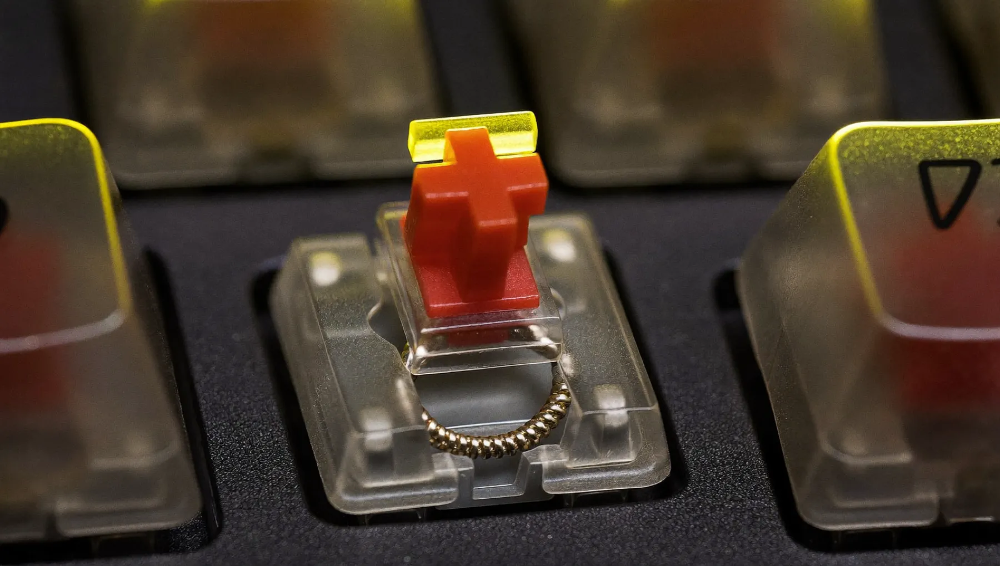

Cada tecla, um tec.
O TecTec fica na barra de menus e toca um switch mecânico de verdade a cada tecla que você aperta. 13 gravações reais e som espacial pelo layout ABNT2.
Psiu: aperta qualquer tecla. Até o Ç.

Digita. Ouve. Escolhe o seu.
Esse é o som de verdade do app. Aperta qualquer tecla, ou toca no teclado aqui embaixo, e troca de switch para comparar. Com fone, repara: o Q soa na esquerda, o Ç na direita.
13 switches. Cada um com a sua voz.
Gravações reais de cada switch, apertando e soltando, com um som para cada fileira do teclado. Clica para ouvir.
Pequeno por fora, caprichado por dentro.
Um app nativo, leve e discreto, que só faz uma coisa e faz bem feito.

Gravações reais, não síntese
Cada switch foi gravado apertando e soltando, com som próprio para cada fileira, para o Espaço, o Enter e o Backspace.
Feito para o ABNT2
O som sai do lugar da tecla: Q na esquerda, Ç e ~ na direita. Com fone, fica imersivo.
Mora na barra de menus
Nativo em Swift, leve e instantâneo. Sem janela e sem ícone no Dock.
Só escuta, não guarda
Ouve as teclas para tocar o som e mais nada. Não grava, não envia, e campos de senha nem chegam até ele.
Atualiza sozinho
Assinado e notarizado pela Apple. Quando sai versão nova, o TecTec avisa e instala.
Nunca soa repetido
Cada toque varia um pouco o tom, como num teclado de verdade. Dá para desligar o som ao soltar a tecla.
Seus próprios sons
Importe pacotes do Mechvibes ou uma pasta de WAVs por tecla, e eles aparecem no menu.
Três passos e pronto.
Baixe e arraste
Abra o DMG e arraste o TecTec para a pasta Aplicativos.
Dê a permissão
Em Ajustes do Sistema › Privacidade e Segurança › Monitoramento de Entrada, ative o TecTec.
Escolha seu switch
Clique no Ç da barra de menus e escolha. Pronto: tec, tec, tec.
Código aberto, do jeito que tem que ser.
Todo o código está no GitHub. Dá para ler, compilar, mudar e mandar melhorias.
- Licença MIT, grátis para sempre
- Sem conta, sem telemetria, sem anúncio
- Sons do projeto kbsim e atualizações pelo Sparkle, ambos MIT
- Contribuições bem-vindas: novos switches, layouts e traduções
$ git clone https://github.com/rafabittt/tectec
$ cd tectec
$ ./build.sh && open TecTec.app